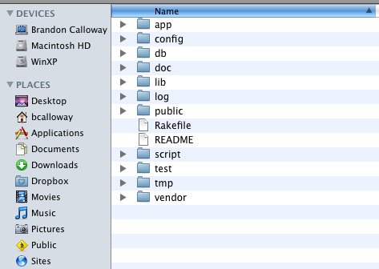

Try it in script/console:
"song".pluralize
ruby script/generate -g controller songsrails -d mysql myproject

gem install railsgem server → http://localhost:8808ruby script/console
ruby script/server
ruby script/generate scaffold blog title:string body:text
rake db:migrate
View all available rake commands (Rake is the Ruby version of Make)
rake -T
index → list all blogs
show → show one blog’s details
new → show a form for creating a new blog
create → insert a new blog into the database
edit → show a form for editing a blog
update → update the blog in the database
destroy → deletes a blog from the database
There are many helpers built-in to Rails
number_to_currency(185) → $185.00
number_to_phone(8889878474) → 888-987-8474
<%= price(song.price) %>
module SongsHelper
def price(value)
value == 0 ? "FREE!" :
number_to_currency(value)
end
endSave contextual navigation as a partial in the /view/blogs directory
_blog_nav.html.erb
Display the navigation in the songs view
<%= render :partial => 'blog_nav' %>